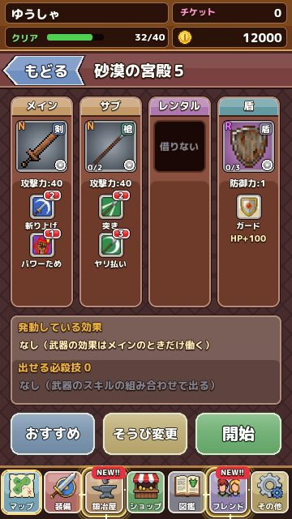

海底の攻略 後半：夜光の洞窟から深淵の門まで
海底の後半 6 エリアの敵・弱点・中ボスとボスの戦い方・初回クリアの品と準備のコツをまとめました。 更新：2026-11-23
この記事の見方
海底の後半、夜光の洞窟から深淵の門までの 6 つのエリアを紹介します。前半のエリアは 海底の攻略 前半、ホールドガードの決まりは 海底編とホールドガード にまとめています。
表の見方は前半と同じです。「有利な属性」はその敵に 2 倍のダメージを与えられる武器の属性（無属性の敵には無属性の武器で 1.5 倍）、「カウント」は敵が攻撃してくるまでの数、「特殊攻撃」の % はふつうの攻撃のうち特殊攻撃になる割合です。
後半で変わること
- ボスのはじく段がふえる：後半のボスは、ふつうの攻撃の 7〜8 割がはじく段になります。必殺技も 3 段以上がふつうで、深淵の門のボスは 4 段です
- 盾のレア度がさらに上がる：竜宮の跡から先は、落ちる盾が SR・SSR・UR になり、UR の割合がぐっとふえます
- 店は夜光の洞窟：後半で店があるのは夜光の洞窟だけです。SR の盾（潮の加護・泡の守り・水密・先読み）がそろいます
- 闇のボスが続く：鯨の眠る谷・深海の海溝・深淵の門は闇属性のエリアで、中ボスとボスはどれも闇属性です。光属性の武器が有利で、後半の初回クリアの品にも光属性の武器が 4 本あります
- 物語の品：深海の海溝のボスからは「水の雫」が手に入ります

夜光の洞窟

光るクラゲやチョウチンアンコウが闇を照らす、光属性のエリアです。後半でただ一つ店があります。アンコウのなかま（槍が弱点）は「擬態」、クラゲのなかま（剣が弱点）は「粘着」を使い、ハンギョの騎士や将軍も出てきます。
| 役 | 名前 | 種族 | 属性 | 弱い武器 | 有利な属性 | カウント | 特殊攻撃 |
|---|---|---|---|---|---|---|---|
| 中ボス（STAGE 4） | チョウチンハンギョ | ハンギョ | 光 | 槍 | 闇 | 3 | － |
| ボス（STAGE 5） | 光クラゲ王ルミナス | クラゲ | 光 | 剣 | 闇 | 3 | 粘着（必殺技のたび） |
| 名前 | 種族 | 属性 | 弱い武器 | 有利な属性 | 特殊攻撃 |
|---|---|---|---|---|---|
| チビアンコウ | ハンギョ | 無 | 槍 | 無 | 擬態（25%） |
| チョウチンアンコウ | ハンギョ | 光 | 槍 | 闇 | 擬態（25%） |
| キバアンコウ | ハンギョ | 闇 | 槍 | 光 | 擬態（25%） |
| ヒカリクラゲ | クラゲ | 風 | 剣 | 炎 | 粘着（30%） |
| オオクラゲ | クラゲ | 水 | 剣 | 風 | 粘着（30%） |
| クラゲクイーン | クラゲ | 炎 | 剣 | 水 | 粘着（35%） |
| ハンギョ騎士 | ハンギョ | 風 | 槍 | 炎 | － |
| ハンギョ将軍 | ハンギョ | 闇 | 槍 | 光 | － |
中ボス・チョウチンハンギョ
光属性のハンギョで、弱点は槍、有利な属性は闇です。押して離すだけの攻撃で、特殊攻撃もありません。闇属性の槍があれば、手早く片づけられます。
ボス・光クラゲ王ルミナス
光属性のクラゲで、弱点は剣です。ふつうの攻撃は 7 割ほどがはじく段です。必殺技「ルミナスフラッシュ」は 1 段が 1 秒から 1.3 秒ほどの短い 3 段で、特殊攻撃「粘着」がつきます。最後の段が矢印の出ない段なら、押せた瞬間につかまれます。指を離さずにスキルで攻撃し、剣でスタンさせて放してもらいましょう。
粘着中に使うスキルは、スタン値をためやすい弱点の剣のスキルが向いています。スタンが取れなくても、次の敵の番に離れていく動きの終わりで離せばガードになるので、慌てて指を離さないことがいちばん大切です。
おすすめの武器と初回クリアの品
剣と槍の 2 本立てです。中ボスとボスは光属性なので、闇属性の武器が有利です。初回クリアの品は 深海光剣アビスライト（剣・光・USR）です。効果「夜光」は特殊攻撃「泡沫」に向けたもので、今の海底のエリアでは出番がありません。光属性の剣として、このあとの闇のエリアで使いましょう。
準備のコツ：店の人魚の鱗盾（潮の加護：ミラクルで回復する HP 120%）、真珠貝の盾（泡の守り：ジャスト以上で離すと次の 1 発のダメージ −30%）、マンタの盾（先読み：合図が早く出る）は、後半を通して使える SR の盾です。どれも DEF 4〜5、HP 180〜200 と、前半の店の盾よりひと回り強くなっています。
流氷の海底
冷たい流氷の下に広がる、水属性のエリアです。魚人の術士たち（槍が弱点）とカメのなかま（槌が弱点）が中心で、アンコウも混じります。泡術士と潮術士は「泡鎧」を使います。
| 役 | 名前 | 種族 | 属性 | 弱い武器 | 有利な属性 | カウント | 特殊攻撃 |
|---|---|---|---|---|---|---|---|
| 中ボス（STAGE 4） | コオリガニ | コウラ | 水 | 槌 | 風 | 3 | － |
| ボス（STAGE 5） | 氷海竜アイスレヴィア | ドラゴン | 水 | 槍 | 風 | 3 | 泡鎧（必殺技のたび） |
| 名前 | 種族 | 属性 | 弱い武器 | 有利な属性 | 特殊攻撃 |
|---|---|---|---|---|---|
| ギョジン見習い | ハンギョ | 無 | 槍 | 無 | － |
| 泡術士 | ハンギョ | 水 | 槍 | 風 | 泡鎧（30%） |
| 潮術士 | ハンギョ | 水 | 槍 | 風 | 泡鎧（30%） |
| コガメ | コウラ | 無 | 槌 | 無 | － |
| アオウミガメ | コウラ | 水 | 槌 | 風 | － |
| イワガメ | コウラ | 風 | 槌 | 炎 | － |
| チビアンコウ | ハンギョ | 無 | 槍 | 無 | 擬態（25%） |
| チョウチンアンコウ | ハンギョ | 光 | 槍 | 闇 | 擬態（25%） |
泡鎧の術士に注意
泡術士・潮術士は弱点が槍ですが、泡鎧の泡は槌でしか割りながら当てられません。泡をまとった術士を槍で攻撃すると、最初の 1 発が泡に消えてしまいます。泡をまとった番は槌で攻撃するか、泡を割る 1 発目は ST の軽いスキルで済ませてから、本命のスキルを当てるのがおすすめです。
中ボス・コオリガニ
水属性のコウラで、弱点は槌、有利な属性は風です。押して離すだけの攻撃で、特殊攻撃もありません。前半でもらえる大亀甲槌キャラパス（風属性の槌）がぴったりの相手です。
ボス・氷海竜アイスレヴィア
水属性のドラゴンで、弱点は槍です。ふつうの攻撃は 7 割ほどがはじく段です。必殺技「アイスブレス」は短めの 3 段で、必殺技のあとは「泡鎧」で泡をまといます。弱点の槍では泡を割るのに 1 発使うので、必殺技のあとの番は、ST の軽いスキルで泡を割ってから大きな技を当てるとむだがありません。
おすすめの武器と初回クリアの品
槍と槌の 2 本立てです。水属性の雑魚が多く、中ボスとボスも水属性なので、風属性の武器が有利です。初回クリアの品は 流氷剣アイスフロー（剣・水・USR）で、当てると 30% の確率で敵のカウントが 1 つ遅れます。攻撃の回数そのものを減らせるので、ガードに自信のないときほど役に立ちます。
竜宮の跡
崩れた宮殿が眠る、光属性のエリアです。カメのなかまとサンゴのゴーレム（どちらも槌が弱点）が中心で、魚人の術士も出てきます。トゲガメは「毒棘」、泡術士は「泡鎧」を使います。たからの STAGE もあるエリアです。
| 役 | 名前 | 種族 | 属性 | 弱い武器 | 有利な属性 | カウント | 特殊攻撃 |
|---|---|---|---|---|---|---|---|
| 中ボス（STAGE 4） | 竜宮の門番 | ゴーレム | 光 | 槌 | 闇 | 4 | － |
| ボス（STAGE 5） | 竜宮像オトヒメガミ | ゴーレム | 光 | 槌 | 闇 | 4 | 擬態（必殺技のたび） |
| 名前 | 種族 | 属性 | 弱い武器 | 有利な属性 | 特殊攻撃 |
|---|---|---|---|---|---|
| トゲガメ | コウラ | 闇 | 槌 | 光 | 毒棘（30%） |
| イッカクガメ | コウラ | 光 | 槌 | 闇 | － |
| オオウミガメ | コウラ | 炎 | 槌 | 水 | － |
| アカサンゴ | ゴーレム | 炎 | 槌 | 水 | － |
| シロサンゴ | ゴーレム | 光 | 槌 | 闇 | － |
| サンゴキング | ゴーレム | 水 | 槌 | 風 | － |
| ギョジン見習い | ハンギョ | 無 | 槍 | 無 | － |
| 泡術士 | ハンギョ | 水 | 槍 | 風 | 泡鎧（30%） |
中ボス・竜宮の門番
光属性のゴーレムで、弱点は槌、有利な属性は闇です。カウントが 4 と長く、攻撃の回数は少なめです。押して離すだけの攻撃なので、攻撃の合間にしっかり削りましょう。
ボス・竜宮像オトヒメガミ
光属性のゴーレムで、弱点は槌です。カウントが 4 の「パワータイプ」のボスで、攻撃の回数が少ない代わりに、1 発がとても重く、HP も多く、スタンもしにくくなっています。さらに必殺技の「!!」の前には力をため、その必殺技「舞姫の扇」は攻撃力が 2 倍になります。力をためた必殺技はミラクルガードにならず、ジャストガードが最高です。
必殺技は長さのばらばらな 3 段です。ミラクルが出ない代わりに、3 段すべてをジャスト以上で受けるのが目標になります。ジャストで受ければダメージは大きく減るので、ここは欲張らず確実にジャストをねらいましょう。必殺技のあとは「擬態」で姿を消すので、その番は雑魚を減らしておきます。
たからの STAGE
竜宮の跡にも、たからのチケットで入れる「たからの STAGE」があります。番人はタコツボッくんで、最初の攻撃の「お肉ちょーだい！」は肉のボタンで受けると宝箱が 1 つふえます。竜宮の跡の番人が落とす盾は、沈没船の墓場より UR の割合が高くなっています。
おすすめの武器と初回クリアの品
槌をメインにし、術士用に槍を持っていきます。中ボスとボスは光属性なので、闇属性の武器が有利です。初回クリアの品は 大シャコ槌グランドクラム（槌・光・USR）で、自分の HP が 50% を切ると威力が 150% になります。光属性の槌なので、次の鯨の眠る谷のガイコツにもよく効きます。
準備のコツ：オトヒメガミの重い必殺技に備えて、DEF の高い盾か、受けるダメージを減らす圧力隔壁の盾を選びましょう。
鯨の眠る谷
巨大な鯨の骨が横たわる、闇属性のエリアです。幽霊船員などのガイコツ（槌が弱点）と、ウミウシのなかま（剣が弱点）が中心で、カメも出てきます。ウミウシとトゲガメは「毒棘」を使うので、雑魚の攻撃でもジャスト以上を取る意識が欠かせません。
| 役 | 名前 | 種族 | 属性 | 弱い武器 | 有利な属性 | カウント | 特殊攻撃 |
|---|---|---|---|---|---|---|---|
| 中ボス（STAGE 4） | ホネクジラ | スケルトン | 闇 | 槌 | 光 | 3 | － |
| ボス（STAGE 5） | 骨鯨ボーンホエール | スケルトン | 闇 | 槌 | 光 | 3 | 擬態（必殺技のたび） |
| 名前 | 種族 | 属性 | 弱い武器 | 有利な属性 | 特殊攻撃 |
|---|---|---|---|---|---|
| 航海士ガイコツ | スケルトン | 水 | 槌 | 風 | － |
| 幽霊船員 | スケルトン | 闇 | 槌 | 光 | － |
| 幽霊提督 | スケルトン | 光 | 槌 | 闇 | － |
| ハリウミウシ | クラゲ | 闇 | 剣 | 光 | 毒棘（30%） |
| ニジウミウシ | クラゲ | 光 | 剣 | 闇 | 毒棘（25%） |
| オウミウシ | クラゲ | 風 | 剣 | 炎 | 毒棘（30%） |
| トゲガメ | コウラ | 闇 | 槌 | 光 | 毒棘（30%） |
| イッカクガメ | コウラ | 光 | 槌 | 闇 | － |
中ボス・ホネクジラ
闇属性のスケルトンで、弱点は槌、有利な属性は光です。押して離すだけの攻撃で、特殊攻撃もありません。
ボス・骨鯨ボーンホエール
闇属性のスケルトンで、弱点は槌です。ふつうの攻撃は 8 割ほどがはじく段で、段の長さも長めです。必殺技「ホエールソング」は 3 段で、1 段が 2 秒あまりと、ゆっくり長く押しこんできます。長い段が 3 回続くので、1 段ごとに「引いて押しこむ」動きを待つ根気が試されます。必殺技のあとは「擬態」で姿を消します。
おすすめの武器と初回クリアの品
槌をメインに、ウミウシ用の剣をサブにします。雑魚は闇と光の敵が半々くらいで、闇の敵には光、光の敵には闇が有利です。中ボスとボスは闇属性なので、前のエリアでもらえる光属性の大シャコ槌グランドクラムがよく合います。初回クリアの品は 角鯨槍ナーワル（槍・光・USR）で、HP が 30% を切った敵への威力が 150% になります。弱らせたボスのとどめに向いた槍です。
深海の海溝
光の届かない深い海の底の、闇属性のエリアです。アンコウのなかまとウツボのなかま（どちらも槍が弱点）が中心で、ガイコツも混じります。アンコウは「擬態」、ドクウツボは「毒棘」を使います。
| 役 | 名前 | 種族 | 属性 | 弱い武器 | 有利な属性 | カウント | 特殊攻撃 |
|---|---|---|---|---|---|---|---|
| 中ボス（STAGE 4） | アンコウハンギョ | ハンギョ | 闇 | 槍 | 光 | 3 | － |
| ボス（STAGE 5） | 海魔クラーケン | クラゲ | 闇 | 剣 | 光 | 3 | 粘着（必殺技のたび） |
| 名前 | 種族 | 属性 | 弱い武器 | 有利な属性 | 特殊攻撃 |
|---|---|---|---|---|---|
| モエアンコウ | ハンギョ | 炎 | 槍 | 水 | 擬態（25%） |
| ヒョウアンコウ | ハンギョ | 水 | 槍 | 風 | 擬態（25%） |
| ダイオウアンコウ | ハンギョ | 風 | 槍 | 炎 | 擬態（30%） |
| ドクウツボ | ケモノ | 闇 | 槍 | 光 | 毒棘（30%） |
| デンキウツボ | ケモノ | 光 | 槍 | 闇 | － |
| オオウツボ | ケモノ | 水 | 槍 | 風 | － |
| 航海士ガイコツ | スケルトン | 水 | 槌 | 風 | － |
| 幽霊船員 | スケルトン | 闇 | 槌 | 光 | － |
中ボス・アンコウハンギョ
闇属性のハンギョで、弱点は槍、有利な属性は光です。押して離すだけの攻撃で、特殊攻撃もありません。
ボス・海魔クラーケン
闇属性のクラゲで、弱点は剣です。ふつうの攻撃は 8 割ほどがはじく段です。必殺技「ダークインク」は長さのばらばらな 3 段で、特殊攻撃「粘着」がつきます。最後の段でつかまれたら、指を離さずに剣のスキルでスタンを取りにいきましょう。ここで勝つと「水の雫」が手に入ります。
おすすめの武器と初回クリアの品
雑魚の多くは槍、ボスは剣が弱点なので、剣と槍の 2 本立てです。雑魚の属性は炎・水・風・闇・光とばらばらですが、中ボスとボスは闇属性なので、光属性の武器が有利です。夜光の洞窟でもらえる光属性の剣アビスライトは、クラーケンの弱点の種類と有利な属性を同時につけられます。初回クリアの品は 雷鰻槍サンダーイール（槍・光・USR）で、スタンのたまりが 130% になります。
深淵の門
海底の通常のエリアの最後は、深い闇へ続く門の前です。魚人の術士たち（槍が弱点、「泡鎧」を使う）と、ウミリュウのなかま（槍が弱点）が中心で、アンコウも出てきます。雑魚はすべて槍が弱点なので、槍が 1 本あれば道中は進めます。
| 役 | 名前 | 種族 | 属性 | 弱い武器 | 有利な属性 | カウント | 特殊攻撃 |
|---|---|---|---|---|---|---|---|
| 中ボス（STAGE 4） | 深淵クラゲ | クラゲ | 闇 | 剣 | 光 | 3 | 粘着（35%） |
| ボス（STAGE 5） | 深淵竜リヴァイアス | ドラゴン | 闇 | 槍 | 光 | 3 | 粘着（必殺技のたび） |
| 名前 | 種族 | 属性 | 弱い武器 | 有利な属性 | 特殊攻撃 |
|---|---|---|---|---|---|
| 渦術士 | ハンギョ | 風 | 槍 | 炎 | 泡鎧（30%） |
| 深海術士 | ハンギョ | 闇 | 槍 | 光 | 泡鎧（30%） |
| 大海術士 | ハンギョ | 光 | 槍 | 闇 | 泡鎧（35%） |
| ウズウミヘビ | ドラゴン | 水 | 槍 | 風 | － |
| ウミリュウ | ドラゴン | 炎 | 槍 | 水 | － |
| オオウミリュウ | ドラゴン | 光 | 槍 | 闇 | － |
| モエアンコウ | ハンギョ | 炎 | 槍 | 水 | 擬態（25%） |
| ヒョウアンコウ | ハンギョ | 水 | 槍 | 風 | 擬態（25%） |
中ボス・深淵クラゲ
闇属性のクラゲで、弱点は剣、有利な属性は光です。前半の海藻の森の中ボスと同じく、ふつうの攻撃のうち 35% が「粘着」になります。つかまれたら、剣でスタンさせて放してもらいましょう。
ボス・深淵竜リヴァイアス
闇属性のドラゴンで、弱点は槍です。ふつうの攻撃は 8 割ほどがはじく段です。必殺技「アビスブレス」は海底のボスでいちばん多い 4 段で、どの段も 1 秒ほどの短い押しこみが続きます。さらに特殊攻撃「粘着」がつき、最後の段でつかまれることもあります。
短い段が 4 回続くので、「離したらすぐ次の『!!』を見て押す」のリズムが崩れると、そこから連続で受けそこねてしまいます。1 段ずつ別々に判定されるので、1 段失敗しても気持ちを切りかえて次の段に集中しましょう。「!!」が出る前から指を置いておくと押し始めにならないので、指はボタンのすぐ上に浮かせて構えておき、「!!」を見てから押しましょう。
おすすめの武器と初回クリアの品
槍をメインに、中ボス用の剣をサブにします。雑魚の属性はばらばらですが、中ボスとボスは闇属性なので光属性の武器が有利です。光属性の槍（ナーワルやサンダーイール）なら、リヴァイアスの弱点の種類と有利な属性を同時につけられます。初回クリアの品は 大鮫剣メガロドン（剣・闇・USR）で、HP が 30% を切った敵への威力が 150% になります。この先には海底の最後の城が待っています。ここまでに集めた盾と武器を、鍛冶屋でしっかり鍛えてから進みましょう。

後半の初回クリアの品
| エリア | 品 | 種類 | 属性 | 効果 |
|---|---|---|---|---|
| 夜光の洞窟 | 深海光剣アビスライト | 剣 | 光 | 夜光（特殊攻撃「泡沫」向け） |
| 流氷の海底 | 流氷剣アイスフロー | 剣 | 水 | 氷海：当てると 30% で敵のカウントが 1 つ遅れる |
| 竜宮の跡 | 大シャコ槌グランドクラム | 槌 | 光 | 玉手箱：自分の HP が 50% を切ると威力 150% |
| 鯨の眠る谷 | 角鯨槍ナーワル | 槍 | 光 | 鮫牙：HP が 30% を切った敵に威力 150% |
| 深海の海溝 | 雷鰻槍サンダーイール | 槍 | 光 | 電撃：スタンのたまり 130% |
| 深淵の門 | 大鮫剣メガロドン | 剣 | 闇 | 鮫牙：HP が 30% を切った敵に威力 150% |
後半は光属性の武器が 4 本もそろいます。闇属性のボスが続く鯨の眠る谷から深淵の門までは、骨鯨ボーンホエールには光の槌（グランドクラム）、海魔クラーケンには光の剣（アビスライト）、深淵竜リヴァイアスには光の槍（ナーワル・サンダーイール）と、弱点の種類と有利な属性を同時につける武器がそろいます。
後半の準備のコツ
- 素材を集めて進化：海底の素材は「泡のかけら」（雑魚とボス）と「深海石」（ボス）です。前半の盾や武器を進化させておくと、後半のボスの重い必殺技にも耐えられます。くわしくは 鍛冶屋の使い方 へ
- はじく段の練習：後半のボスは矢印の出る段がとても多いので、海洋観測所のチュートリアルの「はじく段」の練習をもう一度やっておくと安心です
- 盾の効果を使い分け：オトヒメガミのような重い必殺技には圧力隔壁（受けるダメージ −10%）、早く離しがちならねばり、ジャストがそろうなら泡の守り、と自分のくせとボスに合わせて盾を替えるのも手です。なお、粘着でつかまれている間に指を離したときは、ねばりでもダメージは減りません
- 難易度の切りかえ：どうしても勝てないボスだけイージーにして、勝ったらもどす、という遊び方もできます。持ち物や進み具合はそのままです
